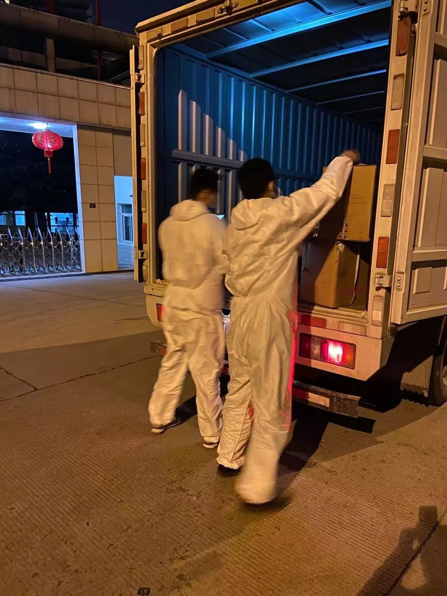
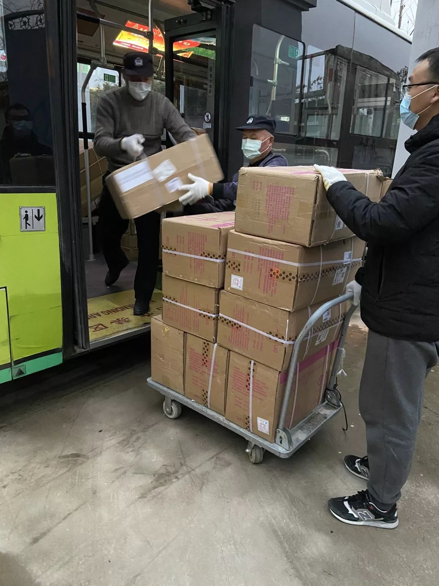
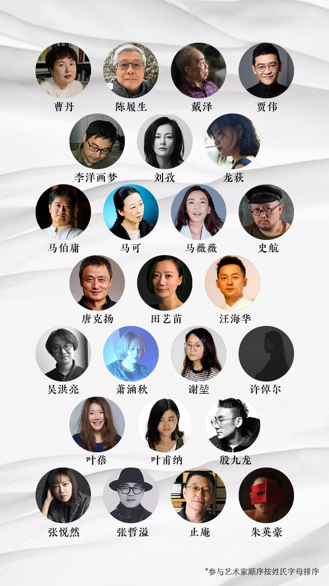
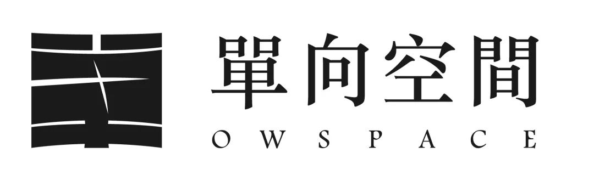
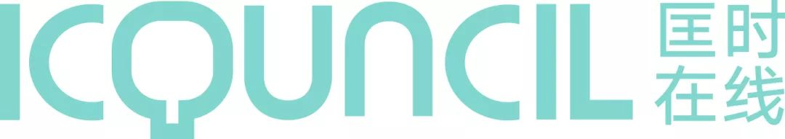

武汉物资紧缺，民间力量把援助送进医院到底有多难？
原文链接 备份链接 2月1日，一家专业从事医药分销配送的企业，开始协助武汉红十字会处理仓库中堆积的援助物资。无序的状况有了很大改观。 1月23日武汉“封城”以来，医院防护物资告急，各种民间力量应声而动。 华中科大和武汉大学的美国北加 …
_
_
_
//
李文亮医生离开了我们。
横在我们面前的许多事情都令人痛苦，可是却不用悲观。这个时候，我们要以更强的决心去战胜疫情，继续前行，以告慰逝去的生命，为那些继续战斗的人们提供保障。为此三联生活传媒与单向空间、北京联益慈善基金会共同发起艺术捐赠与拍卖活动，所得用于支援湖北一线医务人员。
△ 点击海报，可进入报名页面
······
_
_
“生命无价 艺术有力”
给朋友们的一封公益倡议信
_
尊敬的艺术家与读者朋友们：
这是个多雪的冬天，注定不太寻常。在向你们发出正式的邀约前，先讲述一下我们这些天的经历。
1月25日是大年初一，早上我们成立了“三联在行动物资协调小组”，帮助武汉疫区的医院寻找和协调各类医疗物资。除了持续发回一线报道外，我们还想做些实际的事情。
在此后的十几天中，我们帮助全国24个城市的51家医院，对接了各类紧缺物资的捐助。包括各种型号的医用外科口罩逾5万只，N95口罩超1.5万只，普通防护口罩近2万只，防护服139件，可被医用的护目镜5519副，各类大量的消毒液、双氧水、外科手套、一次性医用帽等物资。
在众多捐献者中，有两个故事让我们心心念念。
武汉有个面包店找我们，想捐200个面包，不知道有没有医院收。我们帮他找到了接受医院，他说我还有1200个面团也做出来捐了吧，于是便有了1400个面包。有位山西读者在上海工作，已经回了家，想起房子里还有一盒口罩，自己用了一个还有9个。她托朋友去找出来，通过我们捐了。那是我们两天中找到的仅有的9个N95口罩。
尽管杯水车薪，但每一个普通人，都在努力贡献自己的力量。更不用说那些早已冲锋陷阵，坚守着生死防线的医护人员。他们用自己的身躯与勇气，挽救每一个生命。他们是真正的英雄。
面对疫情，艺术虽然无法直接救死扶伤，但它自有力量。艺术让我们在困境中秉持善念，安抚伤痛中的心灵, 在风雨后重拾勇气与希望。如加缪在小说《鼠疫》中所说的：“只要有一丝温情尚在，绝望就不致于吞噬人心。”
所以当下，我们也需要艺术的力量，不仅提供实质的援助，同时振奋精神，抚慰人心，启迪思想。为那些奋不顾身的医生、护士，为那些默默付出的志愿行动者，为那些在病痛中彷徨挣扎的人，也为我们芸芸众生，行动起来。
为此，《三联生活周刊》与单向空间、北京联益慈善基金会共同发起“生命无价，艺术有力”众生公益行动。北京单向街公益基金会为此次行动提供特别支持，iCouncil匡时在线承办此次在线展览与网络义拍。当代著名艺术家戴泽、中国国家博物馆原副馆长陈履生担任本次艺术公益行动特邀顾问。
我们诚挚地邀请您一起，成为本行动的联合发起人，捐献作品拍卖，发布您的主张，贡献一份自己的心力。
您可按照下面的方式参与本次公益行动：
以“大疫情下的众生关怀”为艺术主题创作：无论是记录、悲悯，警醒或反思，角度不限；
贡献您认为有意义的现有作品或藏品，无论是书法、绘画、雕塑或手稿，形式不限；
作品的材质、尺幅不限。
我们也号召广大的文化艺术同仁一起行动起来，用爱心义卖、原创艺术作品等丰富的形式参与进来。
艺术家捐赠的作品与收藏将通过匡时在线进行线上拍卖。本次公益行动拍卖所得，将通过北京联益慈善基金会专款用于武汉“战疫”一线的医护人员的关爱医护包项目，为一线医护人员提供个人物资，改善他们的生活条件，提升工作舒适度。
2018年联益慈善基金会开始在武汉协和医院支持困难患儿及家庭。疫情发生后，1月24日北京联益基金会即成立应急响应工作组，持续关注疾驰支援疫区的医护人员，他们在紧张救治工作中，也急需关爱和照顾。联益团队克服采购难、运输难，先抢运首批1000个“联益医护关爱包”抵达一线。随后，陆续将1,220,000只医用手套、1500公斤消毒片、近10000件防护服等紧急物资向疫区医院和社区运输。




△ 向左滑动，联益慈善基金会支援疫区照片
此次善款，将用于采购第二批联益医护关爱包物资。
届时，具体的受助对象、数量、到达情况，我们都会及时透明地公开公示，确保您的善意被有效传递。
本次公益行动时间表
首次所有作品在线展览暨公益拍卖：2月14、15日；
捐助及后继行动：2月19日启动，同步保持公开和公示；
作品媒体展示时间：自收到作品信息之日起。
展示平台
三联生活周刊微信、微博、匡时在线APP、单向街书店微信、单向街图书馆微博。
在线拍卖平台
匡时在线APP、iCouncil匡时在线微信小程序。
作品信息提交要求
1、高清作品图片，每张图片不小于1兆。
2、作品基础信息、描述创作主旨介绍及作者简介。
3、如果可以，我们也请您录制一段您介绍作品的VLOG
4、可点击【活动海报】报名，或将以上信息发送至邮箱info@icouncil.com.cn、xingyu@lifeweek.com.cn
作品筛选及邮寄
我们将对报名作品进行筛选，选定符合本次活动宗旨并有相当价值的作品，由工作人员与艺术家直接联系确认，商定邮寄事宜。
活动报名及咨询联系人
邢宇 18643101085 （微信同号）
潘鸿 15810532504（微信同号）
罗启宏18501198080（微信 luoqihong9696）
_
这是一次开始，以艺术的力量为战胜灾疫作出贡献。这也是一次持续的行动，救助生命，救助心灵，通过艺术家的创作记住现在，思考未来。
涓涓细流，无远弗届。战疫必胜！感谢所有为此次行动提供支持和助力的人们，期待您的参与。
三联生活传媒&单向空间&北京联益慈善基金会
2020年2月8日
_
△ 生命无价，艺术有力｜众生公益行动邀请您一起来支援湖北
这是一次开始，以艺术的力量为战胜灾疫作出贡献。这也是一次持续的行动，救助生命，救助心灵，通过艺术家的创作记住现在，思考未来。
同时，欢迎读者朋友们也能参与进来，参与拍卖，购买你们喜爱的作品，奉献爱心与力量。
首批响应艺术家

主办机构

三联生活传媒是国内著名全媒体内容机构，旗下包括杂志、新媒体、中读APP，真实报道世界，倡导品质人文生活。

国内著名的文化创意综合空间。以推荐高品质的阅读生活为己任。

北京联益慈善基金会是于2011年经北京市民政局批准设立的首家全领域民间公募慈善机构。始终坚持打造中国深度公益联合平台的愿景，在教育、扶贫、环保、艺术、慈善参与五个领域开展深度公益项目或支持有公益理想的人或组织，联合实现“透明、易行、有效”的深度公益。
在线展览与网络拍卖承办机构

美好生活拍卖行，以艺术界资深行业资源搭建“艺术+互联网”的新业态，自成立以来，一直秉持“倡导艺术消费，缔造品质生活”的理念，旨在以兼具审美价值与投资收藏价值的消费级艺术品，为精英人群提供与艺术生活相关的高品质、一站式精准服务，引领生活新方式。
点击【阅读原文】报名
↓↓↓↓↓↓
_
原文链接 备份链接 2月1日，一家专业从事医药分销配送的企业，开始协助武汉红十字会处理仓库中堆积的援助物资。无序的状况有了很大改观。 1月23日武汉“封城”以来，医院防护物资告急，各种民间力量应声而动。 华中科大和武汉大学的美国北加 …
原文链接 备份链接 来源：腾讯新闻《潜望》 栏目 作者：张珺 从北上广深等城市筹集善款到口罩、防护服发放到医生护士手中，需要经历多少难关？ 1月初开始新型冠状病毒席卷中国，商业公司、基金会、普通民众、海外华侨留学生，捐赠速度空前。包括企业 …
原文链接 备份链接 面对突发的疫情，互联网医疗能做的还有很多。17年前的SARS疫情中，吸烟、吃碘盐能防“非典”等谣言，一度给全国人民带来很大困扰。 17年后，当新冠病毒来袭，迅速建立的信息通道，让在家中躲避疫情的人们可以及时接触到可靠的 …
原文链接 备份链接 年前，我把手里剩下的工作赶了赶，提前几天就坐上了回家的高铁。像往常一样，我打算利用离开北京的这段时间，反思和整理一下自己，以便准备充分地迎接春天。坐在列车的座位上，许多关于 “明年” 的想法在脑中涌现，我有些兴奋，拿出 …
原文链接 备份链接 一场疫情改变了教培行业的局面，这既是在线教育相关公司承担社会责任的时期，也是证明其价值的机会。 记者 | 王一越、邓舒夏、叶雨晨、吴洋洋 实习记者 | 陶紫东、袁颖 编辑 | 倪 妮 制图 | 程 星 寒暑假历来是教 …